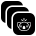
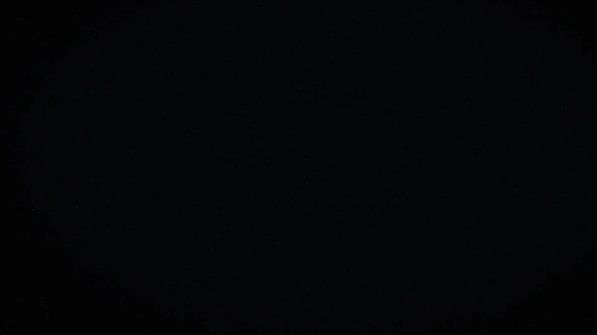

<!doctype html>
<!-- SPDX-License-Identifier: FSL-1.1-MIT -->
<!-- Copyright (c) 2026 Cua AI, Inc. -->
<!--
  The DMG art and the app icon, drawn from the spaces.cua.ai hero (FloatHero:
  the same sky, sprites, positions and legend homography, minus the copy).
  render.sh screenshots it with headless Chrome:
    #bg     the Finder window background: the hero in the top-left 720x480 (the window),
            and more sky out to 2560x1440, because Finder never scales or tiles the
            picture and people can still resize the window (render.sh also takes it at 2x)
    #icon   the app icon, 1024x1024: the blue Cua Spaces key on a tile of the sky
    #alias  the Applications alias icon, 1024x1024: that key's outline with a faint
            Applications glyph where its legend sits, on transparent
  The key sits at the same place, angle and size in #icon and #alias, so in
  Finder the app icon is visibly the shape of the Applications target.
  The sprites in src/ come from the site (trycua/cloud src/spaces-site/public/img/float).
-->
<meta charset="utf-8">
<style>
  html, body { margin: 0; background: transparent; overflow: hidden; }
  .stage { position: relative; overflow: hidden; }
  .sky { position: absolute; inset: -12px; }
  .sky img { position: absolute; inset: 0; width: 100%; height: 100%; object-fit: cover; filter: brightness(1.7) contrast(1.08); }
  .star { position: absolute; border-radius: 50%; background: #f0f3fa; box-shadow: 0 0 3px #f0f3fab3; }
  .item { position: absolute; }
  .item > .in { position: absolute; inset: 0; }
  img.sprite { position: absolute; inset: 0; width: 100%; height: 100%; }
  .legend { position: absolute; left: 0; top: 0; width: 100px; height: 100px; transform-origin: 0 0; }
  .legend > img { position: absolute; inset: 24%; width: 52%; height: 52%; object-fit: contain; }
  .legend > svg { position: absolute; inset: 17%; width: 66%; height: 66%; overflow: visible; }
</style>
<div class="stage" id="stage"></div>
<script>
  // Window and icon geometry; dmg-settings.py positions the icons to match.
  const WIN = { w: 720, h: 480 };
  const CANVAS = { w: 2560, h: 1440 }; // what a resized window can show
  // Icon centres from dmg-settings.py. Finder centres each label about 92 points below its icon
  // and draws it black in light mode, white in dark; on this sky either would vanish, so a
  // mid-grey pill (readable under both, opaque so stars stay behind it) sits where each label lands.
  const APP = { x: 173, y: 240, label: 65 }, APPS = { x: 566, y: 147, label: 68 };
  // measured in Finder on macOS 26: label text is centred 0.75 left of the icon, its capitals 91.25 below
  const LABEL_DX = -0.75, LABEL_DY = 91.25;
  // The alias draws its outline ALIAS_DY lower in its icon (18 points at 144) and sits 18 points
  // higher, so the outline stays put while its label comes up to the gap the app's label has
  // under the app's tile (measured in Finder: 23.5 points each).
  const ALIAS_DY = 128;
  // Likewise 6 points left in its icon and 6 right in the window: the tilted key's front edge
  // leans right, so its label centres on that edge rather than on the outline's bounding box.
  const ALIAS_DX = -43;
  const ICON = 1024, TILE = 824, KEY = 640; // Apple's 1024 grid: an 824 tile, and the key's width on it

  // From FloatHero (spaces.cua.ai): sprite sizes, outlines, legend quads and the wide layout.
  const SPR = {
    "product-1": { w: 486, h: 470, outline: [[110,65],[309,8],[327,10],[341,20],[359,52],[414,165],[445,238],[461,280],[476,326],[476,345],[465,357],[421,375],[328,406],[187,449],[143,461],[125,461],[116,456],[109,447],[84,388],[19,218],[8,184],[11,164],[27,140],[51,109],[82,78],[104,67]], quad: [[105,78],[325,22],[415,215],[165,268]] },
    "product-2": { w: 494, h: 481, quad: [[100,92],[300,15],[408,222],[185,298]] },
    "product-3": { w: 491, h: 477, quad: [[95,82],[318,12],[410,210],[172,282]] },
    "product-4": { w: 484, h: 469 },
    "ivory-1": { w: 397, h: 383 }, "ivory-3": { w: 392, h: 393 }, "ivory-5": { w: 352, h: 350 }, "ivory-6": { w: 365, h: 398 },
    "near-1": { w: 473, h: 397 }, "near-2": { w: 467, h: 471 }, "near-3": { w: 463, h: 459 },
    "far-1": { w: 236, h: 220 }, "far-2": { w: 225, h: 212 }, "far-3": { w: 220, h: 220 }, "far-4": { w: 237, h: 226 },
  };
  const LAYOUT = [
    { src: "far-2", x: 54, y: 47, size: 5.2, depth: .1, rot: -8 }, { src: "far-4", x: 44, y: 74, size: 5, depth: .1, rot: 12 },
    { src: "far-1", x: 58, y: 90, size: 5.6, depth: .12, rot: 4 }, { src: "far-3", x: 97, y: 50, size: 5, depth: .1, rot: 6 },
    { src: "ivory-3", x: 85, y: 13, size: 9.5, depth: .45, rot: 4 }, { src: "ivory-1", x: 64, y: 60, size: 13.5, depth: .5, rot: -6 },
    { src: "ivory-5", x: 95, y: 68, size: 10, depth: .45, rot: 8 }, { src: "ivory-6", x: 70, y: 86, size: 9, depth: .45, rot: -3 },
    { src: "product-4", x: 61, y: 30, size: 14, depth: .55, rot: -4 },
    { src: "product-1", x: 78, y: 40, size: 15, depth: .6, rot: 6, legend: "spaces" },
    { src: "product-2", x: 93, y: 27, size: 13, depth: .55, rot: -9, legend: "driver" },
    { src: "product-3", x: 77, y: 66, size: 14, depth: .6, rot: 3, legend: "lume" },
    { src: "near-2", x: 56, y: 6, size: 15, depth: .9, rot: 0 }, { src: "near-1", x: 3, y: 92, size: 19, depth: 1, rot: 0, soft: true },
    { src: "near-3", x: 92, y: 96, size: 19, depth: .95, rot: 0 },
  ];
  const LEGEND = {
    spaces: '',
    driver: '',
    lume: '',
    // a three-stroke Applications "A", drawn here rather than taken from macOS
    apps: '<svg viewBox="0 0 100 100" fill="none" stroke="#fff" stroke-width="8" stroke-linecap="round" opacity=".55"><path d="M58,14L24,78M42,14L76,78M16,60H84M20,86L28,72"/></svg>',
  };
  const TARGET = "product-1"; // the Cua Spaces key: gone from the background, it is the app icon

  // the site's seeded stars: 56 over the hero (seed 7), then the same density out to the canvas
  const rng = (e) => () => ((e = (e * 16807) % 2147483647) - 1) / 2147483646;
  const starAt = (t, x, y) => ({ x, y, d: 1.2 + t() * 1.1, o: .55 + t() ** 2 * .45 });
  const STARS = (() => {
    const t = rng(7), out = Array.from({ length: 56 }, () => starAt(t, t() * WIN.w, t() * WIN.h));
    const more = Math.round(out.length * (CANVAS.w * CANVAS.h - WIN.w * WIN.h) / (WIN.w * WIN.h)), u = rng(11);
    while (out.length < 56 + more) {
      const x = u() * CANVAS.w, y = u() * CANVAS.h, s = starAt(u, x, y);
      if (x > WIN.w + 4 || y > WIN.h + 4) out.push(s);
    }
    return out;
  })();
  // a few far keys drifting off beyond the window
  const EXTRA_KEYS = [
    { src: "far-1", x: 905, y: 130, w: 40, rot: 10 }, { src: "far-3", x: 1190, y: 430, w: 34, rot: -6 },
    { src: "far-2", x: 965, y: 655, w: 30, rot: 14 }, { src: "far-4", x: 1510, y: 250, w: 36, rot: -12 },
    { src: "ivory-5", x: 1330, y: 830, w: 72, rot: 8 }, { src: "far-1", x: 300, y: 760, w: 34, rot: -4 },
    { src: "far-3", x: 760, y: 990, w: 28, rot: 6 }, { src: "ivory-3", x: 1910, y: 590, w: 64, rot: -10 },
    { src: "far-2", x: 2210, y: 300, w: 32, rot: 12 }, { src: "far-4", x: 1720, y: 1110, w: 30, rot: -8 },
    { src: "far-1", x: 2380, y: 880, w: 36, rot: 4 }, { src: "near-3", x: 1150, y: 1330, w: 190, rot: 0 },
  ];

  // the site's homography(): map a 100x100 box onto a quad
  function homography(q, t = 100) {
    const [[n, r], [i, a], [o, s], [c, l]] = q;
    const u = i - o, d = c - o, f = a - s, p = l - s, m = n - i + o - c, h = r - a + s - l, g = u * p - d * f;
    const _ = (m * p - d * h) / g, v = (u * h - m * f) / g;
    const y = i - n + _ * i, b = c - n + v * c, x = a - r + _ * a, S = l - r + v * l, C = 1 / t, w = 1 / 100;
    return `matrix3d(${y * C},${x * C},0,${_ * C},${b * w},${S * w},0,${v * w},0,0,1,0,${n},${r},0,1)`;
  }
  const legendAt = (src, w, html) => {
    const k = w / SPR[src].w;
    return `<div class="legend" style="transform:${homography(SPR[src].quad.map(([x, y]) => [x * k, y * k]))}">${html}</div>`;
  };
  const sprite = (src, w, legend) => `` + (legend ? legendAt(src, w, LEGEND[legend]) : "");
  const sky = `<div class="sky"></div>`;
  // a sprite of width w centred on (x, y), rotated like the hero's
  const item = (src, x, y, w, rot, { legend, z = 0, soft = false } = {}) => {
    const h = w * SPR[src].h / SPR[src].w;
    return `<div class="item" style="left:${x - w / 2}px;top:${y - h / 2}px;width:${w}px;height:${h}px;z-index:${z}">
      <div class="in" style="transform:rotate(${rot}deg)${soft ? ";opacity:.72" : ""}">${sprite(src, w, legend)}</div></div>`;
  };

  // Apple's tile is a continuous-corner squircle; a superellipse (n = 5) matches it closely
  function squircle(size, inset, n = 5) {
    const r = size / 2 - inset, c = size / 2, pts = [];
    for (let i = 0; i < 360; i++) {
      const a = (i / 360) * 2 * Math.PI, ca = Math.cos(a), sa = Math.sin(a);
      pts.push(`${(c + r * Math.sign(ca) * Math.abs(ca) ** (2 / n)).toFixed(2)} ${(c + r * Math.sign(sa) * Math.abs(sa) ** (2 / n)).toFixed(2)}`);
    }
    return `M${pts.join("L")}Z`;
  }

  // the key as it sits on the icon grid: centred, at its hero angle
  function iconKey(inner, dy = 0, dx = 0) {
    const T = LAYOUT.find((e) => e.src === TARGET), sp = SPR[TARGET], h = KEY * sp.h / sp.w;
    return `<div class="item" style="left:${(ICON - KEY) / 2 + dx}px;top:${(ICON - h) / 2 + dy}px;width:${KEY}px;height:${h}px">
      <div class="in" style="transform:rotate(${T.rot}deg)">${inner(KEY, h)}</div></div>`;
  }

  const stage = document.getElementById("stage"), mode = location.hash.slice(1) || "bg";

  // The label pills and a trail of star-like dots from the app to Applications.
  function guides() {
    const pill = (c) => { const w = c.label + 22, h = 20, x = c.x + LABEL_DX - w / 2, y = c.y + LABEL_DY - h / 2;
      return `<rect x="${x}" y="${y}" width="${w}" height="${h}" rx="10" fill="#5b5954" stroke="#fff" stroke-opacity=".22"/>`; };
    // a cubic from the app's right edge to the slot's left, threading between the keys
    const P = [[250, 234], [318, 180], [415, 204], [494, 192]];
    const at = (t) => [0, 1].map((i) => (1 - t) ** 3 * P[0][i] + 3 * (1 - t) ** 2 * t * P[1][i] + 3 * (1 - t) * t * t * P[2][i] + t ** 3 * P[3][i]);
    let dots = "", n = 26;
    for (let i = 0; i < n; i++) {
      const t = i / (n - 1) * .94, [x, y] = at(t);
      dots += `<circle cx="${x.toFixed(1)}" cy="${y.toFixed(1)}" r="${(1.1 + t * .7).toFixed(2)}" fill="#f0f3fa" fill-opacity="${(.22 + t * .6).toFixed(2)}"/>`;
    }
    const [ex, ey] = at(1), [px, py] = at(.96), a = Math.atan2(ey - py, ex - px) * 180 / Math.PI;
    const head = `<path d="M-7,-5.5L0,0L-7,5.5" fill="none" stroke="#f0f3fa" stroke-opacity=".85" stroke-width="1.8" stroke-linecap="round" stroke-linejoin="round" transform="translate(${ex.toFixed(1)},${ey.toFixed(1)}) rotate(${a.toFixed(1)})"/>`;
    return `<svg width="${CANVAS.w}" height="${CANVAS.h}" style="position:absolute;inset:0;z-index:20;overflow:visible">${pill(APP)}${pill(APPS)}${dots}${head}</svg>`;
  }

  if (mode === "bg") {
    Object.assign(stage.style, { width: CANVAS.w + "px", height: CANVAS.h + "px", background: "#050607" });
    stage.innerHTML = sky +
      STARS.map((s) => `<span class="star" style="left:${s.x.toFixed(1)}px;top:${s.y.toFixed(1)}px;width:${s.d}px;height:${s.d}px;opacity:${s.o.toFixed(2)}"></span>`).join("") +
      EXTRA_KEYS.map((e) => item(e.src, e.x, e.y, e.w, e.rot)).join("") +
      LAYOUT.filter((e) => e.src !== TARGET).map((e) =>
        item(e.src, e.x / 100 * WIN.w, e.y / 100 * WIN.h, e.size / 100 * WIN.w, e.rot, { legend: e.legend, z: Math.round(e.depth * 10), soft: e.soft })).join("") +
      guides();
  } else if (mode === "icon") {
    Object.assign(stage.style, { width: ICON + "px", height: ICON + "px" });
    const clip = `path('${squircle(ICON, (ICON - TILE) / 2)}')`;
    stage.innerHTML = `<div style="position:absolute;inset:0;clip-path:${clip};background:#050607;overflow:hidden">
        <div style="position:absolute;inset:${(ICON - TILE) / 2}px;overflow:hidden">${sky}</div>
        <div style="position:absolute;inset:0;background:radial-gradient(60% 55% at 50% 42%, rgba(120,170,215,.10), rgba(0,0,0,0) 70%)"></div>
        ${iconKey((w) => sprite(TARGET, w, "spaces"))}
      </div>`;
  } else if (mode === "alias") {
    Object.assign(stage.style, { width: ICON + "px", height: ICON + "px" });
    const sp = SPR[TARGET];
    stage.innerHTML = iconKey((w, h) => {
      const k = w / sp.w, pts = sp.outline.map(([x, y]) => `${(x * k).toFixed(1)},${(y * k).toFixed(1)}`).join(" ");
      return `<svg width="${w}" height="${h}" style="position:absolute;inset:0;overflow:visible"><polygon points="${pts}" fill="#fff" fill-opacity=".03" stroke="#fff" stroke-opacity=".42" stroke-width="5" stroke-linejoin="round"/></svg>` +
        legendAt(TARGET, w, LEGEND.apps);
    }, ALIAS_DY, ALIAS_DX);
  }
</script>
